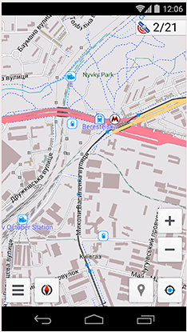

GLOBAL MOBILE
MAPS & NAVIGATION
MAPS & NAVIGATION


APP FEATURES
Global Mobile Map Viewing and Navigation for Online and Offline OSM Maps

NAVIGATION
- Works online (fast) or offline (no roaming charges when you are abroad)
- Turn-by-turn voice guidance (recorded and synthesized voices)
- Optional lane guidance, street name display, and estimated time of arrival
- Supports intermediate points on your itinerary
- Automatic re-routing whenever you deviate from the route
- Search for places by address, by type (e.g.: restaurant, hotel, gas station, museum), or by geographical coordinates
MAP VIEWING
- Display your position and orientation on the map
- Optionally align the map according to compass or your direction of motion
- Save your most important places as Favorites
- Display POIs (point of interests) around you
- Can display specialized online tile maps
- Can display satellite view (from Bing)
- Can display different overlays like touring/navigation GPX tracks and additional maps with customizable transparency
- Optionally display place names in English, local, or phonetic spelling


BICYCLE AND PEDESTRIAN FEATURES
- The maps include foot, hiking, and bike paths, great for outdoor activities
- Special routing and display modes for bike and pedestrian
- Optional public transport stops (bus, tram, train) including line names
- Optional trip recording to local GPX file or online service
- Optional speed and altitude display
- Display of contour lines and hill-shading (via additional plugin)
OPEN STREET MAP AND WIKIPEDIA DATA
- High quality information from the best collaborative projects of the world
- Global maps from OpenStreetMap, available per country or region
- Wikipedia POIs, great for sightseeing (not available in free version)
- Unlimited free download, directly from the app (download limit 10 map files in free version)
- Always up-to-date maps (updated at least once a month)
- Compact offline vector maps
- Select between complete map data and just road network (Example: All of Japan is 700 MB, or 200 MB for the road network only)
- Also supports online or cached tile maps

SCREENSHOTS
- 
MAP EXAMPLE
MAP STYLE
SHOW